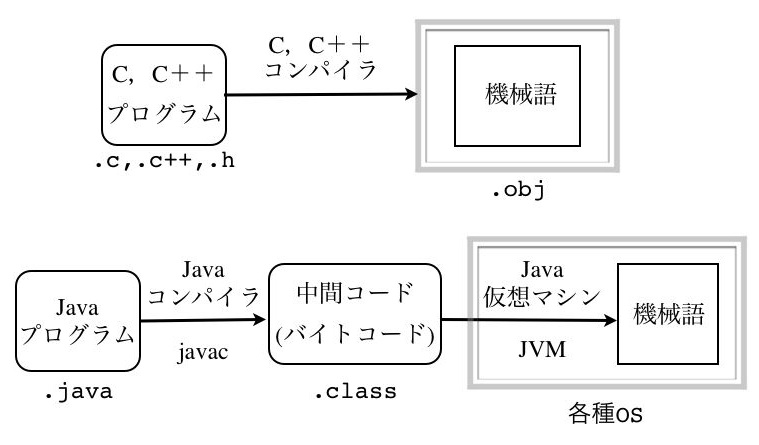
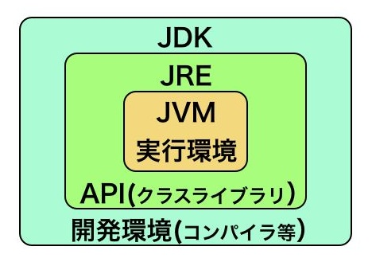
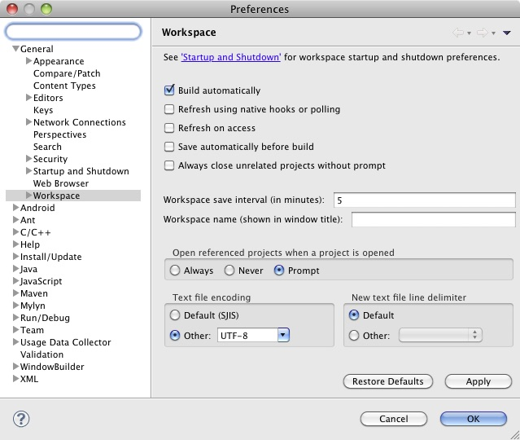
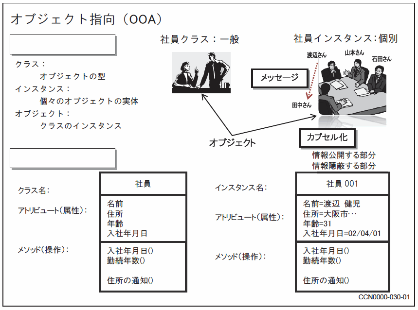

本演習の進め方と採点方式
演習の目的
- 演習を通じ、Java を用いたプログラムの開発能力を養う
- Java プログラムの代表的な機能の活用方法を修得する
演習の進め方と評価方法
- サンプルコードを呈示しながら、要点を解説する
- 本テキスト中のサンプルコードは自由にコピー＆改竄して良いが、演習課題や練習問題での使用に限定する
- 詳細はWebで検索するか、参考書で自主学習（予習）する
- 本テキスト中にも、要所にリンク先を示している
- 演習中の口頭での質問も大歓迎
- メールでの質問も受け付けるが、まずは自力で調査する事！
- 演習課題の提出物で成績を判定する（ただし、演習課題毎に異なる提出期限が設定される）
- 演習課題の他に課す練習問題は提出の義務は無いが、自身の理解度を深めるために必要だと判断されれば解く事
- 最終的に筆記試験を実施する
本テキストの様式
導入（Java の基礎）
１．Java の特徴
ソースコード、コンパイル、および実行
Ｃ言語やＣ＋＋では、ソースコードをコンパイルすると機械語が直接生成されるが、JavaではソースコードをコンパイルするとOSに依存しない中間コードが生成され、それらが各OS上に実装された仮想Javaマシン(JVM)によって各コンピュータで動作する機械語に変換される。
階層的な実行環境と開発環境
Java では上記の実行環境(JVM)の他に各種のクラスライブラリ(API)が提供されており、それらを含む、プログラムを開発するための環境である Java Development Kit (JDK) が提供されている。

＜＜Java の実行手順と構成に関する詳細な説明はこちら＞＞
２．Ｃ＋＋からの移行
以下に、Java とＣ＋＋との相違点と類似点をまとめる。
相違点
- ソースファイルは１種類 (.java) である
- ヘッダ (.h) とソース (.c や .c++) の区別がない
- ヘッダファイルの読み込み宣言(#include)も存在しない
- 独立した関数という概念が無く、全ての手続きはクラス内で宣言されるメソッドとして実装される
- 全ての変数や式は何らかの型を持ち、基本型（プリミティブ型）と参照型に分類される
- 基本型はＣ言語の変数の型（char、short、int、long、float、double）に論理値（boolean）とバイト（byte）を加えたもの
- 参照型は配列、クラス、インタフェースがあり、代入操作によってポインタがコピーされる（Ｃ＋＋の【参照】と類似の性質）
- ポインタ変数から変数や関数を参照するための「
->」の記号は用いない
- 文字列は文字の配列では無くString クラスが用いられる
- 数値を扱う際には基本型以外に、数値クラス（Byte、Short、Integer、Long、Float、Double、etc.）が存在する
- メモリ管理が不要である
- カベージ・コレクション（ゴミ集め）という機能がメモリ領域を監視して、使用されていない領域を自動的に解放する
- Ｃ言語における free やＣ＋＋における delete に相当する、メモリ領域を解放するメソッド（機能）が提供されない
一致点
- 制御文（for, while, if else, switch）の書式
- 演算子（算術、比較、条件、シフト、ビット、代入）の書式
- ただし、Ｃ＋＋では可能な operator による演算子の再定義はできない
- コメントの付け方（ただし、Java 特有のコメントの付け方も存在する）
- フィールドやメソッドを静的な変数や関数として static 宣言できる
- Ｃ＋＋と同様の例外処理 try 〜 catch 〜 finally の書式
- 標準的な例外クラスが提供されている
類似点
- クラスの継承ができる
- ただし、多重継承は許されていない
- フィールド（メンバ変数）やメソッドに対する公開や隠蔽をアクセス修飾子（public, protected, private）で設定できる
- ただし、各フィールドやメソッドに対して指定する
- private：同じクラス内のメソッドと、同じクラスのオブジェクト同士からのみアクセス可能
- 省略した場合：同じパッケージ内のクラスからのみアクセス可能
- protected：同じパッケージ内のクラスと、そのサブクラスからのみアクセス可能。ただし、クラス宣言に対しては使用不可
- public：どこからでもアクセス可能
- Ｃ＋＋での略記宣言(namespace)と同等の機能が使用できる
- ただし、import というキーワードを用いる
３．簡易なプログラムでの練習
Hello world!
まず最初に、main 関数のみをメソッドとして含む最もシンプルなクラスを構築する。
HelloWorld.java の内容：
public class HelloWorld {
public static void main(String[] args) {
System.out.println("Hello, world!");
}
}
- クラス名とファイル名は同一 (HelloWorld) でなければならない
- main 関数は公開(public)され、クラスに固有のメソッド(static)として構築する
- main 関数はクラス毎に設定できる
- 実行時に指定したクラスの main 関数が、最初に起動されるメソッドとして選択される
- String は文字列を表す型である
- System.out.println では、System クラスの静的フィールド out（PrintStream クラスである）のメソッド println が呼び出されている
- 文字列はダブルクオーテーション（”）で囲む（Ｃ言語と同じ）
static はＣ＋＋の静的変数や静的関数と同様の性質を有する（慣れないうちは、main 関数以外には用いない）
コンパイルと実行（ターミナルでの実行例）
まずターミナルを起動し、cd コマンドでソースコード（HelloWorld.java）が置かれているディレクトリ（フォルダ）に移動する
javac HelloWorld.java ← コンパイル java HellowWorld ← 実行 Hello world! ← 実行結果の出力
ただし、日本語が含まれていて文字化けが原因でエラーが出力される場合は、
javac -encoding UTF-8 HelloWorld.java
とする（UTF-8 は実際にファイルに保存されているテキストの文字コード名に置換する）。
また、実行時に文字化けが発生する場合は、以下の様なオプションで実行する。
java -Dfile.encoding=UTF8 HelloWorld
これらの指定を恒常的に実行する環境は、以下の設定で構築できる。
- 自分のホームディレクトリのシェルファイル .bash_profile を開く（存在しない場合は、新規に作成する）。
- 以下の２行を追加する。
alias javac='javac -J-Dfile.encoding=UTF-8' alias java='java -Dfile.encoding=UTF-8'
- このシェルファイルはログイン時に自動的に読み込まれ環境が設定されるが、編集した後に
再ログインせずに更新した設定を反映するには、
source .bash_profile
- javac の実行後に HellowWorld.class ファイルが生成されている
- java は、この .class ファイルを読み込んでJVM上で実行する
String の変数を用いて、複雑な画面出力を試みる
次に、文字列と数字を組み合わせたプログラムの例を示す
public class HelloWorld {
public static void main(String[] args) {
String hello;
hello = "Hello, world!";
System.out.println(hello);
int age = 32;
int nextYearAge = age + 1;
String message1 = "私は" + age + "歳です。";
String message2 = "私は来年" + nextYearAge + "歳になります。";
System.out.println(message1);
System.out.println(message2);
System.out.println("私は来年" + age + 1 + "歳になります。");
}
}
コンパイル時に、文字化けの原因でエラー出力された場合は -Dfile.encoding UTF8 のオプションが必要。
- String は文字列のクラスである
- 文字列同士の連結には「＋」演算子が用いられる
- 連結演算子＋によって、数字は文字や文字列に自動変換される
- ＋の両側が数値の場合も文字列の連結演算子として解釈される（例：age + 1 は 321 となる）
練習問題
上記のプログラムで、末尾の命令 System.out.println("私は来年" + age + 1 + "歳になります。"); が意味として正しく「私は来年33歳になります。」と表示される様に修正せよ。
実行時に渡す変数を出力する
次に、プログラムを起動する際に main メソッドに渡す引数の値を処理するプログラム例を示す。
public class HelloWorld {
public static void main(String[] args) {
if (args.length == 2) {
String message1 = "私の名前は" + args[0] + "です。";
String message2 = "今年で" + args[1] + "歳になります。";
System.out.println(message1);
System.out.println(message2);
}
else {
System.out.println("実行する際に、名前と年齢を指定して下さい。例：java HelloWorld Taro 20");
}
}
}
実行時にターミナルから漢字を入力した場合、文字化けする可能性がある
- 実行時に渡される値は、文字列（String）の配列として、main メソッドが呼び出される際の args に代入される
- 渡された配列に含まれる値の数は args.length で確認できるので、この数をエラー処理（入力データ数の過不足）に用いる
パッケージのクラスを使用して、実行後に値を入力する
ここでは、java.util というパッケージに含まれる Scanner という値入力用のクラスを用いたプログラム例を示す。
Sum.java の内容：
import java.util.Scanner;
public class Sum {
public static void main(String[] args) {
Scanner scanner = new Scanner(System.in); // 標準入力（System.in）からの入力を取り扱う
int total = 0;
String line = "0";
do {
int value = Integer.valueOf(line); // 文字列を整数値に変換する
total += value;
System.out.println("現在までの合計は " + total + " です。");
System.out.print("整数を入力: ");
line = scanner.nextLine(); // キーボードで入力された整数値を読み込む
} while (line.isEmpty() == false); // 入力が無かったら終了
}
}
何も入力せずに改行（リターンキー）を入力すると、プログラムが終了する
- import は、Ｃ＋＋言語における namespace と同様に、パッケージ名を省略するために用いられる
- 例えば、Scanner クラスは、java.util のパッケージに含まれているので、import されていなければ
java.util.Scanner scanner = new java.util.Scanner(System.in);
の様に、完全限定名（パッケージ名を省略しない名前）で指定する必要がある
- 例えば、Scanner クラスは、java.util のパッケージに含まれているので、import されていなければ
- 「＊」を用いて、階層的に命名されているパッケージの、ある階層の全体を指定できる。すなわち、
import java.util.*;
と記述すると、java.util パッケージに含まれる全クラスをインポートできる - String も完全限定名は java.lang.String なので、import java.lang.String が必要だが、import java.lang.* は省略できる
- クラスの実体（インスタンス）を生成する際には new 演算子を用いる
- System クラスのフィールドである in は標準入力を表し、キーボードからの入力値を受け取れる
- int value = Integer.valueOf(line); は、文字列 line を整数値に変換するために Integer クラスの静的メソッド valueOf を使用している
Java の開発環境に関して
テキストエディタ
本演習で開発するプログラムは比較的小規模なものなので、演習用ＰＣに付属の Emacs や テキストエディット で開発が可能である。 コンパイル作業の効率化には、Ant という命令（Ｃ言語での make に相当）を利用できる。
Xcode
演習室のＰＣでは Xcode という統合開発環境（Integrated Development Environment (IDE) と呼ばれる）が付属している。これは、Java 向けに開発されたアプリケーションではないので、 環境設定に苦労する事が予想される。ただし、テキストエディタとしては、変数名の自動入力等の便利機能が多くあるので、Emacs やテキストエディタの代用としてのみ利用し、コンパイル等の作業はターミナルを用いた命令で行うのを推奨する。
Eclipse 等の開発環境の使用法
Java の統合開発環境の代表例として Eclipse や Netbeans 等が挙げられるが、演習室のＰＣでは Eclipse が使用できる。統合開発環境は慣れるまでに時間がかかるが、プログラム開発に際して以下の利点が得られる。
- 多くのファイルを頻繁に切り替えながら編集しやすい
- コンパイル → エラー表示 → 修正作業がすばやく切り替えられる
- デバッグ作業が対話的に効率良く行える
- 誤った構文や単語スペルを即座に表示され修正できる
- コメントの挿入やドキュメントの生成(javadoc)が効率良くできる
- 記入しようとしている単語の候補を自動的に表示できる（オートコンプリーション機能）
- プラグインを組込む事により、作業やアプリケーションに特化した機能やインタフェースが利用できる（例：Android の開発環境）
日本語が文字化けする場合には、上部メニューの Eclipse → 環境設定... を選択し、以下の様に文字コードを UTF-8 に設定する。
この開発環境を用いれば、jar ファイルの作成までメニューから実行できるが、外部のライブラリーを用いた場合等は、 Eclipse の統合環境からしか実行できない場合が起こりうるので、 提出前にはターミナルからの実行が可能である事を、必ず確認する事。
捕捉：オブジェクト指向の基礎概念
オブジェクト指向の目的
対象とするアプリケーションに対して、識別対象をオブジェクトと見なし、オブジェクト間の協調動作の分析を通じて設計を進めるアプローチであり、以下の効果を狙う：
- 機能の単位を部品化して再利用を促す
- データ構造や論理構造の複雑さを軽減する
- 拡張性に富む柔軟なシステム構築環境を実現する
基本的な概念
クラス
オブジェクトの型であり、類似性の高いオブジェクトから共通な性質を抜き出して定義したもの
インスタンス
個々のオブジェクトを実体化したもの
オブジェクト
構成要素
- フィールド：データ、変数、またはその集合体であり、オブジェクトを特徴付ける要素
- メソッド：自身または他のオブジェクトから呼び出されて実行される一連の処理、手続き
カプセル化
アトリビュート、メソッドでオブジェクトを構築する事
オブジェクト指向の実装例